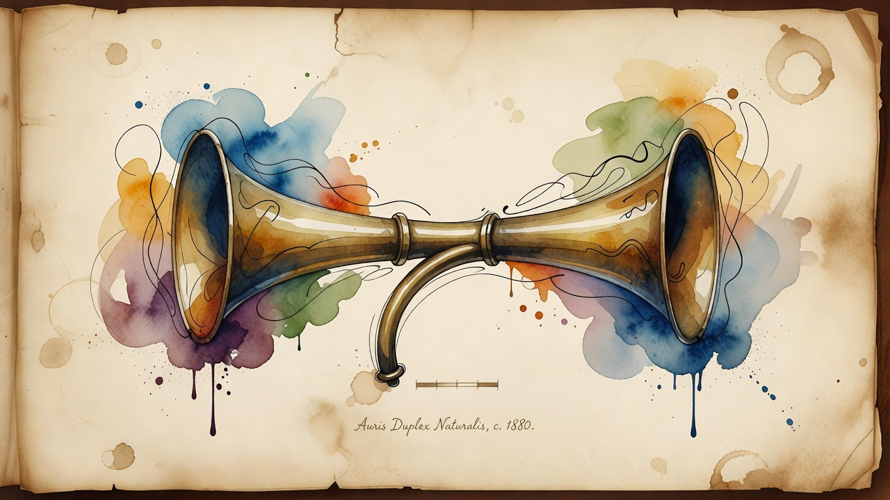

Voice goes full-duplex
OpenAI ships GPT-Live full-duplex voice for ChatGPT, rebuilt in six months
OpenAI rolled out true full-duplex voice to ChatGPT Voice, letting the assistant listen and speak at the same time via a turnless speech model with a dedicated audio fast path and async reasoning. The overhaul cuts voice-session startup from six network round-trips to one, and the team detailed how they shipped it in just six months.